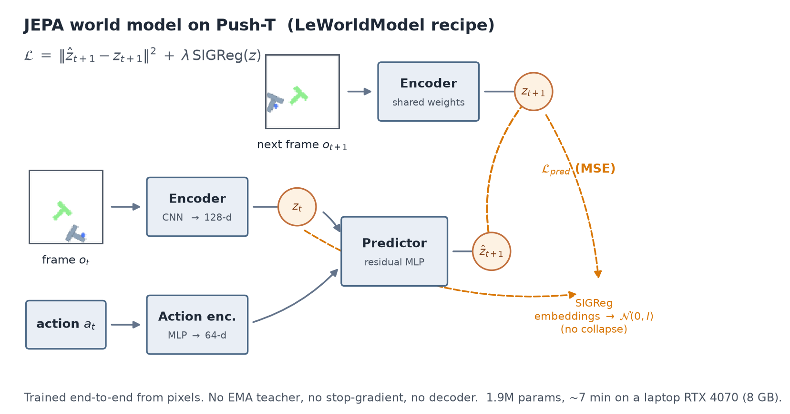
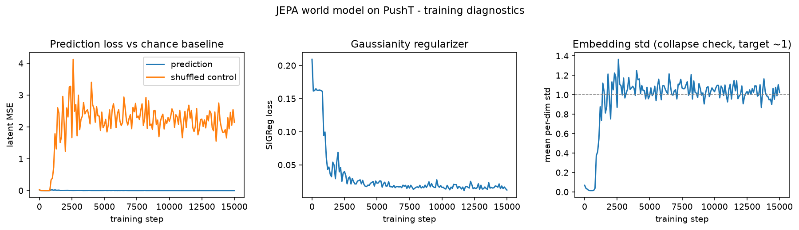
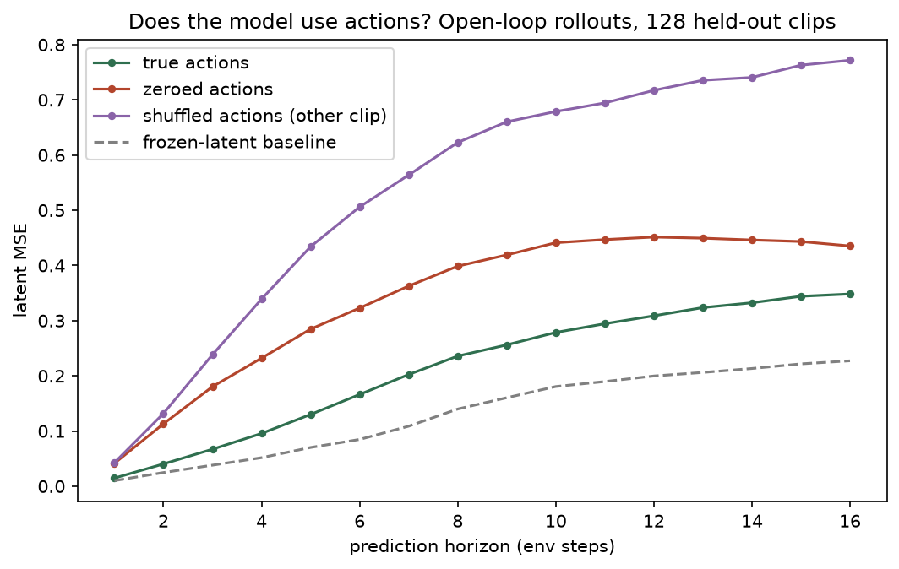
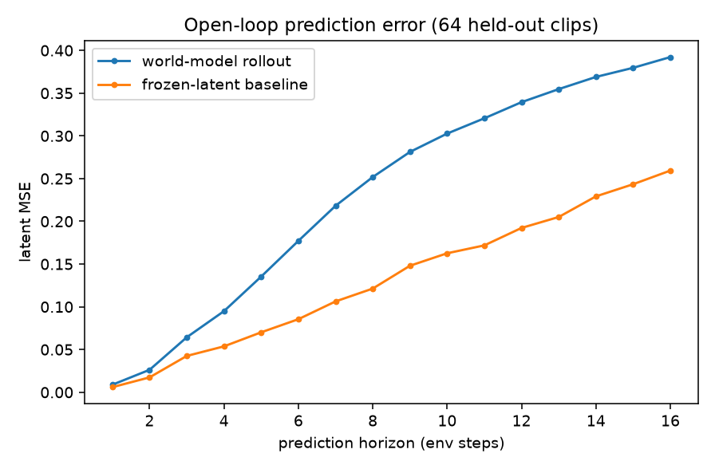
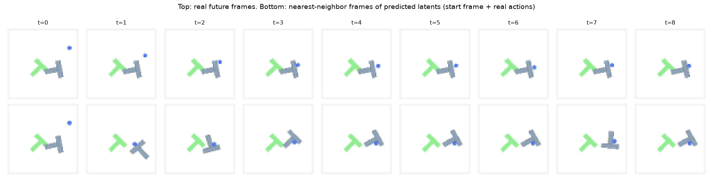

A world model is a system that predicts how an environment will change under your actions. It is the piece most people think is missing between today's models and machines that act competently in the physical world, and it is the thing I most wanted to understand by building rather than by reading.
Why world models, and why JEPA
The two reference points in this space right now are both out of reach for an individual. Meta's V-JEPA 2 plans robot manipulation from a video-pretrained latent predictor. NVIDIA's Cosmos trains omnimodal world foundation models across thousands of GPUs. Neither is something I can train.
What is reachable is the mechanism. A Joint-Embedding Predictive Architecture predicts the representation of the next observation rather than its pixels. That distinction matters more than it sounds: a pixel predictor has to invent the exact texture of every surface it has never seen, while an embedding predictor is allowed to throw unpredictable detail away. LeCun proposed this as the foundation for autonomous machine intelligence in 2022; I-JEPA instantiated it for images, V-JEPA for video, and V-JEPA 2-AC added action conditioning for planning.
There is one classic way this fails. If the encoder maps every frame to the same constant vector, prediction becomes trivially perfect and the representation is worthless. This is representation collapse, and the historical fixes are fiddly: EMA teacher networks, stop-gradients, variance and covariance penalties. A lot of JEPA implementation difficulty is really collapse-avoidance machinery.
LeJEPA replaced all of it with one idea: push the embedding distribution toward an isotropic Gaussian. A collapsed embedding is maximally non-Gaussian, so the regularizer rules collapse out by construction rather than by heuristic. LeWorldModel then showed that this is enough to train an action-conditioned world model end to end from pixels, at around 15M parameters on a single GPU. That is the recipe I wanted to reproduce, shrunk to fit a laptop.
The recipe: two encoders, one predictor, two losses
The whole system is four small modules. A CNN encoder maps a 64×64 frame to a 128-dimensional latent. A tiny MLP embeds the 2-D action. A residual MLP takes the current latent plus the action embedding and predicts the next latent. There is no decoder anywhere, because nothing ever has to be turned back into pixels.

The objective is the part worth staring at:
No EMA teacher. No stop-gradient, so gradients flow into the target branch too.
No pixel reconstruction. SIGReg implements the Epps-Pulley normality
test: latents are projected onto 64 random unit directions, and the empirical
characteristic function of each 1-D projection is matched against that of a
standard normal over 17 quadrature points. Prediction targets come from rolling
the predictor forward eight steps from a single starting latent, with no teacher
forcing.
The build: 160 episodes, one dependency fight, eight minutes
The environment is Push-T from the LeRobot benchmark, where a circular agent has to push a T-shaped block onto a target zone. It is small enough to iterate on in minutes but still has the two ingredients that make world modelling hard: contact dynamics and a goal-conditioned reward.
I collected 160 episodes, 25,600 transitions, with a scripted mixture policy: half smooth random walk, half noisy pursuit of the block so that collisions actually happen. Frames were rendered at 96×96 and resized to 64×64. Split was 144 training episodes against 16 held-out ones, so 23,184 training frames and 2,576 validation frames.
One dependency fight is worth recording, because it cost more time than the
model did. gym-pusht 0.1.6 crashed on reset() with
AttributeError: 'Space' object has no attribute 'add_collision_handler'.
The environment targets the pymunk 6 API and pip had happily installed pymunk 7,
which removed that method. The entire fix:
pip install "pymunk<7"After that, the full pipeline ran unattended:
$py = ".\.venv\Scripts\python.exe"
& $py collect_data.py --episodes 160 --max-steps 160 # ~2 min
& $py train.py --steps 15000 --run runs/run1 # ~7 min
& $py viz.py --run runs/run1 # diagnostics
& $py plan.py --run runs/run1 # CEM planningCollect, train, visualise and plan: 8.0 minutes end to end on an RTX 4070 laptop with 8 GB of VRAM. Training ran 15,000 steps at 36.4 iterations per second with batches of 64 eight-step clips in bf16, which works out to roughly 21,000 frame encodings per second.
I then asked the model four questions, each paired with a control. The controls are the only reason I trust the answers.
Result 1: it trains stably, without any of the tricks

Final prediction MSE was 0.0009. The shuffled-target control, where I score each prediction against a randomly chosen other clip's future, sat at 2.14. That is a factor of roughly 2,400, and it is the number that tells me the predictor is tracking which future belongs to which clip rather than learning the average frame.
Embedding standard deviation rose from 0.06 to 1.02 and held there, which is the isotropic-Gaussian target. Collapse would have driven it to zero. It never went near zero, on the first try, with no teacher network.
The two diagnostics also agree with each other, which is a check I like. For 128-dimensional latents distributed as a standard normal, the expected MSE between two independent samples is about 2.0 per dimension. The shuffled control settled at 2.14. The chance baseline and the Gaussianity target are consistent.
One honest wrinkle. When I looked at how Gaussian the latent space actually became, random 1-D projections had mean −0.02 and standard deviation 1.05, so the first two moments were on target, but the distribution was peakier than a normal with heavier tails, and the covariance spectrum had an effective rank of 26 out of 128. The regularizer got the marginals approximately right, while the prediction loss concentrated variance into the couple of dozen directions that actually matter for dynamics. Perfect isotropy was not reached and, for everything below, was not needed.
Result 2: physical state appears in the latent space

The model only ever saw pixels and actions. It was never told where the agent was. To quantify what it picked up anyway, I fit ridge probes on frozen training latents and evaluated them on held-out episodes. Crucially, I ran the same probes against an untrained encoder with random weights, because random convolutional features are a notoriously strong basis for reading static properties out of images.
| Probe target (val R²) | Trained encoder | Random-weight encoder |
|---|---|---|
| Agent x-position | 0.589 | 0.044 |
| Agent y-position | 0.168 | 0.089 |
| Coverage reward | 0.363 | 0.590 |
Agent x-position went from R² 0.04 to 0.59, a 13-fold jump. That is the JEPA promise working: predictive pretraining surfaced the action-driven state variable with no state supervision at all.
The third row is why the control was worth running. Coverage, which is a static visual property, decodes better from random features (0.59) than from the trained latent (0.36). Predictive training compressed the representation toward what is predictable and action-relevant, and discarded some static appearance detail along the way. Had I reported only the trained-encoder column, I would have claimed a general-purpose representation. It is not one. It is a representation of the things the model needed in order to predict.
Result 3: the predictor genuinely uses the actions
An action-conditioned model that quietly ignores its actions is a real failure mode, and it hides well because the loss still goes down. Push-T frames change slowly, so "assume nothing moves" is a genuinely competitive prediction. To test this I rolled out 128 held-out clips three ways: with the true actions, with actions zeroed, and with actions swapped in from a different clip.

| Latent MSE | h=1 | h=4 | h=8 | h=16 |
|---|---|---|---|---|
| True actions | 0.015 | 0.096 | 0.236 | 0.348 |
| Zeroed actions | 0.041 | 0.232 | 0.399 | 0.435 |
| Shuffled actions | 0.043 | 0.339 | 0.623 | 0.772 |
| Frozen-latent baseline | 0.010 | 0.052 | 0.140 | 0.227 |
The ordering is exactly what a working action-conditioned model produces. Wrong actions hurt more than no actions, because zeroed actions read as "stay still", which is a plausible prior here, while shuffled actions actively point the prediction somewhere false. Both hurt far more than the truth, by a factor of 2.4 to 3.5 at a four-step horizon. The model is routing control input into its predictions rather than behaving as a passive video prior.
Result 4: it does not generalise, and that is the whole story
Look at the bottom row of that table again. The frozen-latent baseline, which predicts that the scene simply does not change, beats my model at every horizon on held-out data.

The two numbers to hold side by side: rollout error on training data was 0.0009, and on held-out episodes at the same horizon it was about 0.24. The model has largely memorised the dynamics of its 144 training episodes. It has not learned dynamics that transfer to 16 new ones.

Without the shuffled-target control, Figure 2 would look like generic loss-goes-down. Without the random-encoder probe, Figure 3 would look like a general-purpose representation. Without the frozen-latent baseline, Figure 5 would look like success. Every conclusion in this post flipped or narrowed because of a control, and controls cost minutes at this scale.
The planner: zero coverage, two identifiable causes
The reason to build a world model is to plan with it. I implemented model-predictive control with the Cross-Entropy Method: 256 candidate action sequences per step, 32 elites, four refinement iterations, an eight-step horizon, replanned at every environment step. The cost is the latent distance between the predicted future and the latent of a goal image.
Zero. Not a low score, an absent one. Two mechanisms explain it, and both were already visible in earlier diagnostics.
The training data contains almost no goal-directed pushing. Mean per-episode maximum coverage across the dataset was 0.195, and most episodes never approach the goal at all. A world model cannot plan through dynamics it has never observed, and the generalisation gap from the previous section compounds at every replanning step.
The cost function is partially satisfiable without touching the block. My goal image contains an agent somewhere. Moving my agent to that position lowers the latent distance at zero pushing cost, so the planner parks the agent and declares victory. It optimised exactly what I wrote down. This is a miniature version of the goal-specification problems reported for image-goal MPC systems at far larger scale.
I am reporting this as a baseline rather than a defect. It is the measurement that makes the next experiment falsifiable: collect scripted pushing data, and either coverage moves or my explanation was wrong.
This is a mechanism reproduction, not a benchmark result. LeWorldModel reports around 94% Push-T success using expert demonstrations, a roughly 15M-parameter model and a tuned planner. My run is 1.9M parameters on 25,600 self-collected transitions from a random-ish policy. The numbers here are not comparable to the paper's, and are not meant to be.
Lessons, and what is next
The barrier to entry is not compute. Two loss terms, 1.9M parameters, seven minutes, 8 GB, working on the first try. The hard parts of world-model research turned out to be data and evaluation discipline, not architecture or hardware.
Representation quality, dynamics generalisation and planning competence are three different things. This experiment cleanly separated them: state is encoded, actions are used, and yet held-out prediction and planning both fail. Each one needed its own measurement, and success on one told me nothing about the others.
Every failure traced back to the same cause. Corner-heavy state coverage, near-zero goal coverage, 144 episodes of dynamics. Data was the binding constraint, and data collection runs at about 80 episodes per minute on this machine, which makes the next steps cheap.
Ordered by expected information per hour:
- Ten times the data, roughly 25 minutes of collection, then re-measure the held-out horizon curve. This directly falsifies the claim that data is the bottleneck.
- A scripted pushing policy, then replan. Tests cause one of the planning failure. An agent-free goal image tests cause two.
- Sweep the regularizer weight and projection count to map effective rank against generalisation.
- Fuse proprioception with modality dropout. Agent position is already stored per step, so this is a small change, and it is the on-ramp to the multimodal sensor world models I actually want to work on.
- Move to benchmarked infrastructure for standardised baselines and solvers instead of my own harness.
The thing I did not expect going in was how much of the value came from the controls rather than the model. The model took an afternoon. Knowing which of its apparent successes were real took the instrumentation, and that is the part I am keeping for the next experiment.
References
- [1] Maes, L. et al. LeWorldModel: Stable End-to-End Joint-Embedding Predictive Architecture from Pixels. 2026. arXiv:2603.19312 · code
- [2] Balestriero, R. & LeCun, Y. LeJEPA: Provable and Scalable Self-Supervised Learning Without the Heuristics. 2025. arXiv:2511.08544
- [3] Assran, M. et al. V-JEPA 2: Self-Supervised Video Models Enable Understanding, Prediction and Planning. 2025. arXiv:2506.09985
- [4] Assran, M. et al. Self-Supervised Learning from Images with a Joint-Embedding Predictive Architecture (I-JEPA). CVPR 2023. arXiv:2301.08243
- [5] LeCun, Y. A Path Towards Autonomous Machine Intelligence. 2022. OpenReview
- [6] Hafner, D. et al. Mastering Diverse Domains through World Models (DreamerV3). code
- [7] Push-T environment, from LeRobot. gym-pusht
Setup, in full
Encoder: four convolution blocks (stride 2, GroupNorm, SiLU) into a 128-d linear projection. Action encoder: two-layer MLP to 64-d. Predictor: residual MLP, three hidden layers of 512. AdamW at 3e-4 with 500 warmup steps, weight decay 1e-4, gradient clipping at 1.0, bf16 autocast with losses in fp32. SIGReg weight 0.5, 64 projections, 17 quadrature points. Python 3.12.4, PyTorch 2.13.0+cu126, gymnasium 1.3.0, gym-pusht 0.1.6, pymunk 6.11.1. Single seed, single environment, single hyperparameter setting, no error bars.